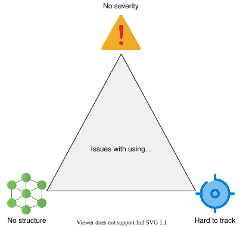
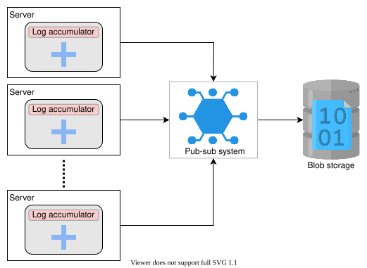
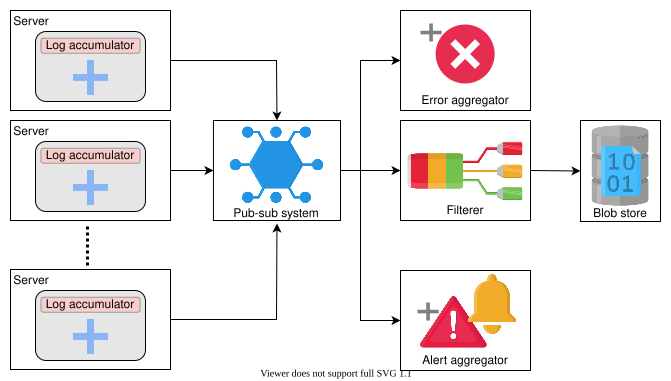

22. Distributed Logging
System Design: Distributed Logging
System Design: Distributed Logging
Let's understand the basics of designing a distributed logging system.
We'll cover the following
Logging#
A log file records details of events occurring in a software application. The details may consist of microservices, transactions, service actions, or anything helpful to debug the flow of an event in the system. Logging is crucial to monitor the application’s flow.
Need for logging#
Logging is essential in understanding the flow of an event in a distributed system. It seems like a tedious task, but upon facing a failure or a security breach, logging helps pinpoint when and how the system failed or was compromised. It can also aid in finding out the root cause of the failure or breach. It decreases the meantime to repair a system.
Why don’t we simply print out our statements to understand the application flow? It’s possible but not ideal. Simple print statements have no way of tracking the severity of the message. The output of print functions usually goes to the terminal, while our need could be to persist such data on a local or remote store. Moreover, we can have millions of print statements, so it’s better to structure and store them properly.

Concurrent activity by a service running on many nodes might need causality information to stitch together a correct flow of events properly. We must be careful while dealing with causality in a distributed system. We use a logging service to appropriately manage the diagnostic and exploratory data of our distributed software.
Logging allows us to understand our code, locate unforeseen errors, fix the identified errors, and visualize the application’s performance. This way, we are aware of how production works, and we know how processes are running in the system.
Log analysis helps us with the following scenarios:
- To troubleshoot applications, nodes, or network issues.
- To adhere to internal security policies, external regulations, and compliance.
- To recognize and respond to data breaches and other security problems.
- To comprehend users’ actions for input to a recommender system.
How will we design a distributed logging system?#
We have divided the distributed logging system design into the following two lessons:
-
Introduction: We’ll discuss how logging works at a distributed level. We’ll also show how we can restrict the huge size of a log file, and structure them. This lesson will guide us about the requirements we should consider while logging information about a system.
-
Design: In this lesson, we’ll define the requirements, API design, and detailed design of our distributed logging system.
Introduction to Distributed Logging
Introduction to Distributed Logging
Learn about why we need logging in a distributed system.
Logging in a distributed system#
In today’s world, an increasing number of designs are moving to microservice architecture instead of monolithic architecture. In microservice architecture, logs of each microservice are accumulated in the respective machine. If we want to know about a certain event that was processed by several microservices, it is difficult to go into every node, figure out the flow, and view error messages. But, it becomes handy if we can trace the log for any particular flow from end to end.
Moreover, it is also not necessary that a microservice is deployed on only one node. It can be deployed on thousands of nodes. Consider the following example, where hundreds of microservices are interdependent, and failure of one service can result in failures of other services. And if we do not have logs, we might not determine the root cause of failure. This emphasizes the need for logging.
Restrain the log size#
The number of logs increases over time. At a time, perhaps hundreds of concurrent messages need to be logged. But the question is, are they all important enough to be logged? To solve this, logs have to be structured. We need to decide what to log into the system on the application or logging level.
Use sampling#
We’ll determine which messages we should log into the system in this approach. Consider a situation where we have lots of messages from the same set of events. For example, there are people commenting on a post, where Person X commented on Person Y’s post, then Person Z commented on Person Y’s post, and so on. Instead of logging all the information, we can use a sampler service that only logs a smaller set of messages from a larger chunk. This way, we can decide on the most important messages to be logged.
Note: For large systems like Facebook, where billions of events happen per second, it is not viable to log them all. An appropriate sampling threshold and strategy are necessary to selectively pick a representative data set.
We can also categorize the types of messages and apply a filter that identifies the important messages and only logs them to the system.
Point to Ponder
Question
What is a scenario where the sampling approach will not work?
Use categorization#
Let’s look into the logging support provided by various programming languages. For example, there’s log4j and logging in Python. The following severity levels are commonly used in logging:
DEBUGINFOWARNINGERRORFATAL/CRITICAL
Usually, the production logs are set to print messages with the severity of WARNING and above. But for more detailed flow, the severity levels can be set to DEBUG and INFO levels too.
Click on the “Run” button to see the execution of an example that uses Python’s logging library to print logs.
The output will be similar to:
DEBUG:root:Debug level
INFO:root:Info level
WARNING:root:Warning level
ERROR:root:Error level
CRITICAL:root:Critical level
Let’s uncomment line 17 to view a system-generated error over the division of an integer by zero. Python itself logs the error to the console:
Structure the logs#
Applications have the liberty to choose the structure of their log data. For example, an application is free to write to log as binary or text data, but it is often helpful to enforce some structure on the logs. The first benefit of structured logs is better interoperability between log writers and readers. Second, the structure can make the job of a log processing system easier.
Note: The structuring of logs is a dense topic in itself. We refer the interested learners to the PhD thesis by Ryan Braud titled "Query-based debugging of distributed systems.”
Points to consider while logging#
We should be careful while logging. The logging information should only contain the relevant information and not breach security concerns. For secure data, we should log encrypted data. We should consider the following few points while logging:
- Avoid logging personally identifiable information (PII), such as names, addresses, emails, and so on.
- Avoid logging sensitive information like credit card numbers, passwords, and so on.
- Avoid excessive information. Logging all information is unnecessary. It only takes up more space and affects performance. Logging, being an I/O-heavy operation, has its performance penalties.
- The logging mechanism should be secure and not vulnerable because logs contain the application’s flow, and an insecure logging mechanism is vulnerable to hackers.
Vulnerability in logging infrastructure#
A zero-day vulnerability in Log4j, a famous logging framework for Java, has been identified recently. Log4j has contained the hidden vulnerability, Log4Shell (CVE-2021-44228), since 2013. Apache gave the highest available score, a CVSS severity rating of 10, to Log4Shell. The exploit is simple to execute and affects hundreds of millions of devices. Security experts are convinced that this vulnerability can allow devastating cyberattacks internationally because it can enable attackers to run malicious code and take control of the machine.
Design of a Distributed Logging Service
Design of a Distributed Logging Service
Learn how to design a distributed logging service.
We’ll design the distributed logging system now. Our logging system should log all activities or messages (we’ll not incorporate sampling ability into our design).
Requirements#
Let’s list the requirements for designing a distributed logging system:
Functional requirements#
The functional requirements of our system are as follows:
-
Writing logs: The services of the distributed system must be able to write into the logging system.
-
Searchable logs: It should be effortless for a system to find logs. Similarly, the application’s flow from end-to-end should also be effortless.
-
Storing logging: The logs should reside in distributed storage for easy access.
-
Centralized logging visualizer: The system should provide a unified view of globally separated services.
Non-functional requirements#
The non-functional requirements of our system are as follows:
-
Low latency: Logging is an I/O-intensive operation that is often much slower than CPU operations. We need to design the system so that logging is not on an application’s critical path.
-
Scalability: We want our logging system to be scalable. It should be able to handle the increasing amounts of logs over time and a growing number of concurrent users.
-
Availability: The logging system should be highly available to log the data.
Building blocks we will use#
The design of a distributed logging system will utilize the following building blocks:
- Pub-sub system: We’ll use a pub-sub- system to handle the huge size of logs.
- Distributed search: We’ll use distributed search to query the logs efficiently.
API design#
The API design for this problem is given below:
Write a message
The API call to perform writing should look like this:
write(unique_ID, message_to_be_logged)
Parameter | Description |
| It is a numeric ID containing |
| It is the log message stored against a unique key. |
Search log
The API call to search data should look like this:
searching(keyword)
This call returns a list of logs that contain the keyword.
Parameter | Description |
| It is used for finding the logs containing the |
Initial design#
In a distributed system, clients across the globe generate events by requesting services from different serving nodes. The nodes generate logs while handling each of the requests. These logs are accumulated on the respective nodes.
In addition to the building blocks, let’s list the major components of our system:
-
Log accumulator: An agent that collects logs from each node and dumps them into storage. So, if we want to know about a particular event, we don’t need to visit each node, and we can fetch them from our storage.
-
Storage: The logs need to be stored somewhere after accumulation. We’ll choose blob storage to save our logs.
-
Log indexer: The growing number of log files affects the searching ability. The log indexer will use the distributed search to search efficiently.
-
Visualizer: The visualizer is used to provide a unified view of all the logs.
The design for this method looks like this:

There are millions of servers in a distributed system, and using a single log accumulator severely affects scalability. Let’s learn how we’ll scale our system.
Logging at various levels#
Let’s explore how the logging system works at various levels.
In a server#
In this section, we’ll learn how various services belonging to different apps will log in to a server.
Let’s consider a situation where we have multiple different applications on a server, such as App 1, App 2, and so on. Each application has various microservices running as well. For example, an e-commerce application can have services like authenticating users, fetching carts, and more running at the same time. Every service produces logs. We use an ID with application-id, service-id, and its time stamp to uniquely identify various services of multiple applications. Time stamps can help us to determine the causality of events.
Each service will push its data to the log accumulator service. It is responsible for these actions:
- Receiving the logs.
- Storing the logs locally.
- Pushing the logs to a pub-sub system.
We use the pub-sub system to cater to our scalability issue. Now, each server has its log accumulator (or multiple accumulators) push the data to pub-sub. The pub-sub system is capable of managing a huge amount of logs.
To fulfill another requirement of low latency, we don’t want the logging to affect the performance of other processes, so we send the logs asynchronously via a low-priority thread. By doing this, our system does not interfere with the performance of others and ensures availability.
3 of 3 We should be mindful that data can be lost in the process of logging huge amounts of messages. There is a trade-off between user-perceived latency and the guarantee that log data persists. For lower latency, log services often keep data in RAM and persist them asynchronously. Additionally, we can minimize data loss by adding redundant log accumulators to handle growing concurrent users.
Point to Ponder
Question
How does logging change when we host our service on a multi-tenant cloud (like AWS) versus when an organization has exclusive control of the infrastructure (like Facebook), specifically in terms of logs?
Note: For applications like banking and financial apps, the logs must be very secure so hackers cannot steal the data. The common practice is to encrypt the data and log. In this way, no one can decrypt the encrypted information using the data from logs.
At datacenter level#
All servers in a data center push the logs to a pub-sub system. Since we use a horizontally-scalable pub-sub system, it is possible to manage huge amounts of logs. We may use multiple instances of the pub-sub per data center. It makes our system scalable, and we can avoid bottlenecks. Then, the pub-sub system pushes the data to the blob storage.

The data does not reside in pub-sub forever and gets deleted after a few days before being stored in archival storage. However, we can utilize the data while it is available in the pub-sub system. The following services will work on the pub-sub data:
-
Filterer: It identifies the application and stores the logs in the blob storage reserved for that application since we do not want to mix logs of two different applications.
-
Error aggregator: It is critical to identify an error as quickly as possible. We use a service that picks up the error messages from the pub-sub system and informs the respective client. It saves us the trouble of searching the logs.
-
Alert aggregator: Alerts are also crucial. So, it is important to be aware of them early. This service identifies the alerts and notifies the appropriate stakeholders if a fatal error is encountered, or sends a message to a monitoring tool.
The updated design is given below:

Point to Ponder
Question
Do we store the logs for a lifetime?
In our design, we have identified another component called the expiration checker. It is responsible for these tasks:
- Verifying the logs that have to be deleted. Verifying the logs to store in cold storage.
Moreover, our components log indexer and visualizer work on the blob storage to provide a good searching experience to the end user. We can see the final design of the logging service below:

Point to Ponder
Question
We learned earlier that a simple user-level API call to a large service might involve hundreds of internal microservices and thousands of nodes. How can we stitch together logs end-to-end for one request with causality intact?
Note: Windows Azure Storage System (WAS) uses an extensive logging infrastructure in its development. It stores the logs in local disks, and given a large number of logs, they do not push the logs to the distributed storage. Instead, they use a grep-like utility that works as a distributed search. This way, they have a unified view of globally distributed logs data.
There can be various ways to design a distributed logging service, but it solely depends on the requirements of our application.
Conclusion#
- We learned how logging is crucial in understanding the flow of events in a distributed system. It helps to reduce the mean time to repair (MTTR) by steering us toward the root causes of issues.
- Logging is an I/O-intensive operation that is time-consuming and slow. It is essential to handle it carefully and not affect the critical path of other services’ execution.
- Logging is essential for monitoring because the data fetched from logs helps monitor the health of an application. (Alert and error aggregators serve this purpose.)